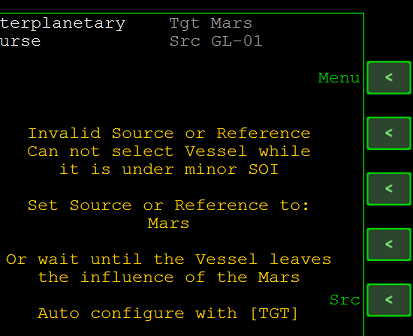

IMFD Part6 BaseApproachとOrbit Insertで基地上空へ
IMFDのBaseApproachを使えば、簡単に目標地点の上空を通る軌道を作成できます。
また、Orbit Insertを使えば全自動で目標の星の周回軌道に入ることができます。
BaseApproachで基地上空へ
Program MenuからBaseApproachをクリック。
Ref Marsになっていることを確認する。
必要であればREFをクリックして、Marsと入力する。
軌道投入モードにする
Nxtを何度かクリックして、Re-Entryを選択。
+を何度かクリックしてOrbit-Insertにする。
遷移軌道から直接再突入するならRe-Entry、いったんパーキング軌道に乗るならOrbit-Insertにする。
パーキング軌道を設定する
ふたたびNxtを何度かクリックして、Altを選択。
MFD右側のSetをクリックして、任意の高度（今回の例では200k）を入力する。
ふたたびNxtを何度かクリックして、Num(Number)を選択。
ここで「軌道を何周してから目標地点の上空を通るか」を決定する。
+かSetをクリックして任意の数字（今回は1）を入力する。
目的地を設定する
TGTをクリックして、地上基地の名前（今回はOlympus）を入力する。
緯度経度を直接指定する場合は、Target:の下の2行に数字を入力する。
軌道修正を実行する
必要な情報をすべて入力したら、Enroute:の下のdVの数字を確認しつつ時間を進める。
dVが減っていくようならしばらく待つ。逆に増えるようなら噴射を開始する。
ABをクリックすると自動でエンジンを噴射するので待つ。
適当なタイミングで再びABをクリック。何度か軌道修正を繰り返しつつ惑星に接近する。
Orbit Insertによる軌道投入
BaseApproachによる軌道修正が終わったら、Program MenuからCourseを開く。
黄色いメッセージが表示されていたら、右上のMenuをクリック。※

※メッセージが表示されていない場合は、Target Interceptなどを選択して+をクリック。
Orbit Insertを選択してSetをクリック。
周回軌道に投入する
Ecc 0.000になっていることを確認して、ABをクリックする。※
タイムワープで放置しておくと、自動で周回軌道に乗せてくれる。
※Apoapsisなどを選択して任意の数字を入力することで、遠地点高度などを指定した軌道も作成できます。
今回の手順がすべて成功すれば、次の周回で基地の真上を通る軌道になっているはずです。
軌道投入に失敗するとき
Orbit Insertが正常に動作しない場合は、Ref Mars、Srcは自機になっているか確認する。
それでもうまくいかない場合は、いったんTarget Interceptなど別のプログラムを選択。
そこからもう一度Orbit Interceptに戻る。